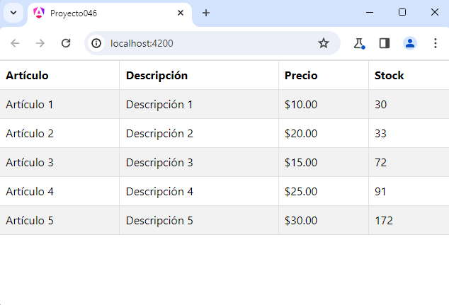

Crear una componente llamada TablaComponent y cuyo selector debe llamarse 'boot-tabla'.
Mediante una propiedad de tipo matriz de string poder pasar los datos que se deben mostrar en una tabla HTML. La primer fila de la matriz representa los títulos.
Crearemos primero el proyecto
ng new proyecto046
Instalamos el Bootstrap original con alguna de las tres formas vistas en conceptos anteriores, mediante CDN o localizándolo en la capeta 'public' o mediante npm.
Crearemos la componente de tabla e indicamos como prefijo para la nueva etiqueta la cadena 'boot' (la idea es recordarnos que esta componente utiliza la librería de Bootstrap):
ng generate component tabla --prefix boot
Modificamos el archivo 'tabla.component.ts':
import { Component, Input } from '@angular/core';
@Component({
selector: 'boot-tabla',
imports: [],
templateUrl: './tabla.component.html',
styleUrl: './tabla.component.css'
})
export class TablaComponent {
@Input() datos: String[][]=[];
}
Modificamos el archivo 'tabla.component.html':
<table class="table table-striped table-bordered">
<thead>
<tr>
@for(titulo of datos[0]; track $index) {
<th> {{ titulo }} </th>
}
</tr>
</thead>
<tbody>
@for(fila of datos.slice(1); track fila) {
<tr>
@for(celda of fila;track celda) {
<td>{{ celda }}</td>
}
</tr>
}
</tbody>
</table>
Ahora nos queda consumir la componente 'boot-tabla', esto lo haremos desde la componente principal de nuestra aplicación Angular.
Modificamos el archivo 'app.component.ts':
import { Component } from '@angular/core';
import { RouterOutlet } from '@angular/router';
import { TablaComponent } from './tabla/tabla.component';
@Component({
selector: 'app-root',
imports: [RouterOutlet, TablaComponent],
templateUrl: './app.component.html',
styleUrls: ['./app.component.css']
})
export class AppComponent {
da: string[][] = [
["Artículo", "Descripción", "Precio","Stock"],
["Artículo 1", "Descripción 1", "$10.00","30"],
["Artículo 2", "Descripción 2", "$20.00","33"],
["Artículo 3", "Descripción 3", "$15.00","72"],
["Artículo 4", "Descripción 4", "$25.00","91"],
["Artículo 5", "Descripción 5", "$30.00","172"]
];
}
Modificamos el archivo 'app.component.html':
<boot-tabla [datos]="da"></boot-tabla> <router-outlet />
Ahora ejecutemos la aplicación:
ng serve -o
Tenemos como resultado:
Podemos probar esta aplicación en la web aquí.